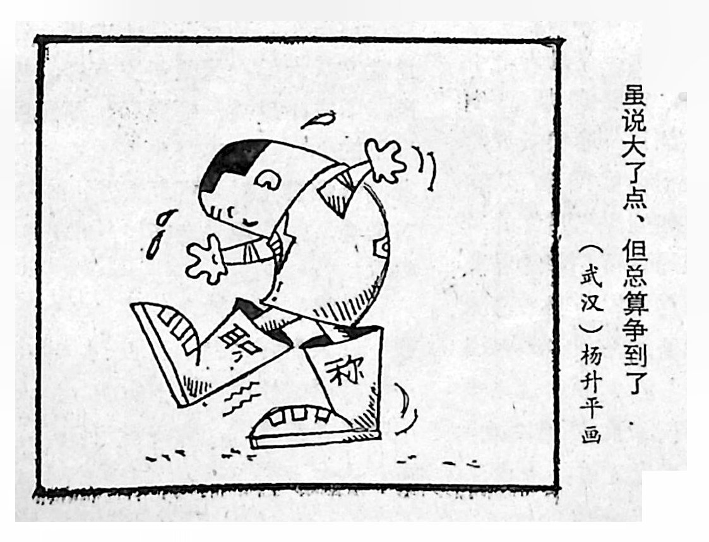

杨升平画 《人事》1990年第1期（总第52期），第37页
虽说大了点，但总算争到了
A Bit Big, But At Least I Got Them
- Caption
- 虽说大了点，但总算争到了。
A bit on the big side — but at least I got them. - Text in the drawing
- 职 / 称
Professional title (one character on each boot) - Description
- A small, round man stumbles along in a pair of huge boots whose two labels spell “professional title.”
- Note
- Professional titles (职称) carried pay and housing benefits, so people fought for titles beyond their qualifications.
- Artist
- Yang Shengping 杨升平 (drawn)
- Published in
- 《人事》1990年第1期（总第52期）, p. 37
- Themes
- Diplomas and credentials · Promotion

Cite
Yang Shengping, “虽说大了点，但总算争到了” [A Bit Big, But At Least I Got Them], Renshi (Personnel) 《人事》, 1990, no. 1, p. 37.